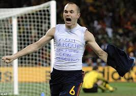

FIFA World Cup 2010
The FIFA World Cup 2010 was the 19th FIFA World Cup, the world championship for
men's national association football teams. It took place in South Africa from
11 June to 11 July 2010. The bidding process for hosting the tournament finals
was open only to African nations. In 2004, the international football federation,
FIFA, selected South Africa over Egypt and Morocco to become the first African
nation to host the finals.The matches were played in 10 stadiums in nine host cities
around the country, with the opening and final played at the Soccer City stadium
in South Africa's largest city, Johannesburg.Thirty-two teams were selected
for participation via a worldwide qualification tournament that began in August 2007.
In the first round of the tournament finals, the teams competed in round-robin groups of
four teams for points, with the top two teams in each group proceeding. These 16 teams
advanced to the knockout stage, where three rounds of play decided which teams would
participate in the final.In the final, Spain, the European champions, defeated the
Netherlands (third-time losing finalists) 1–0 after extra time, with Andrés Iniesta's
goal in the 116th minute giving Spain their first world title. Spain became the eighth
nation to win the tournament and the first European nation to win a World Cup hosted
outside its home continent: all previous World Cups held outside Europe had been won
by South American nations. As a result of their win, Spain represented the World in
the 2013 FIFA Confederations Cup. Host nation South Africa, 2006 champions Italy and
2006 runners-up France were all eliminated in the first round of the tournament. It
was the first time that the hosts had been eliminated in the first round. New Zealand,
with their three draws, were the only undefeated team in the tournament, but they were
also eliminated in the first round.

Final
The 2010 FIFA World Cup Final (also known as the Battle of Johannesburg) was a football
match that took place on 11 July 2010 at Soccer City in Johannesburg, South Africa, to
determine the winner of the 2010 FIFA World Cup. Spain defeated the Netherlands 1–0 with
a goal from Andrés Iniesta four minutes from the end of extra time. English referee Howard
Webb was selected to officiate the match, which was marked by an unusually high number of
yellow cards.With both the Netherlands and Spain attempting to win their first FIFA World Cup,
the 2010 final became the sixth final to be contested between non-former champions after 1930,
1934, 1954, 1958, and 1978. The Netherlands had been beaten in the final in 1974 and 1978, while
Spain's best performance had been fourth place in 1950. It was the second consecutive all-European
final, and marked the first time a European team has won the trophy outside Europe.Prior to this game,
the Netherlands and Spain had never met each other in the main tournament stages of either a World Cup
or a European Championship, the two major tournaments for European international teams. In all-time
head-to-head results, the teams had met nine times previously since 1920, winning four games each and
drawing once, in either friendlies, European Championship qualifying games, and once in the 1920 Summer
Olympics.It was the first time since the 1978 final that neither of the finalists had previously won the
World Cup. The Netherlands were runners-up twice before, losing 2–1 to West Germany in 1974, and 3–1
(after extra time) to Argentina in 1978. Reaching the 2010 final was Spain's best performance in the
World Cup, having previously finished fourth in 1950 when the tournament had a round-robin final stage,
and the quarter-finals stage in 1934, 1986, 1994 and 2002, when single elimination knock-out stages featured.
Spain became the 12th different country to play in a World Cup Final, and first new team since France in 1998.
The Netherlands played in its third final without a win, surpassing the record it had shared with Hungary and
Czechoslovakia. Overall, Germany leads with four final losses. It was the first World Cup final not to feature
at least one of Brazil, Italy, Germany or Argentina. Spain became just the eighth country to win the World Cup,
joining England and France as nations who have won it just once.Before the match Spain had an Elo rating of
2111 points and the Netherlands a rating of 2100 points. Thus, the finalists combined for 4211 points, the
highest for any international football match ever played, beating the previous record of 4161 combined points
for the 1954 FIFA World Cup Final between Hungary and West Germany.